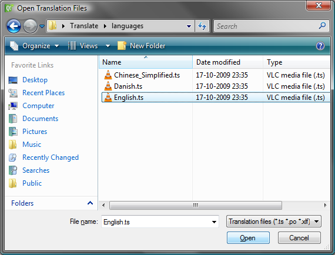
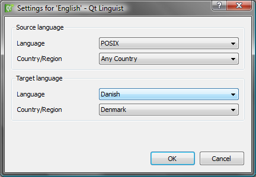
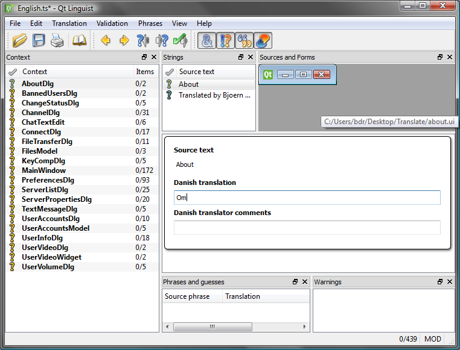
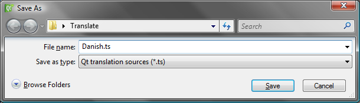
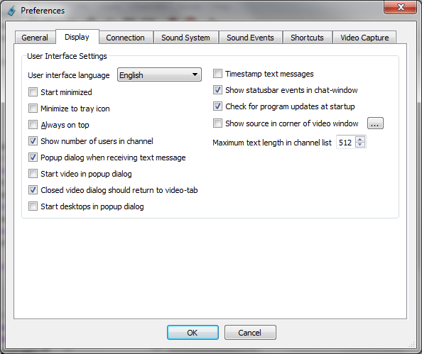

Translate TeamTalk 5
By translating TeamTalk 5 to your language you can help to grow the
TeamTalk community, so you can meet interesting people and get new
friends on TeamTalk servers around the world.
How to translate TeamTalk 5
Run the program file "linguist.exe"
located in the folder where you unzipped the translator archive.
The Qt Linguist will now be started:
Now click 'File -> Open' and locate the file named English.ts in
the languages
sub-folder of the Qt Linguist program:

When the file is opened you need to choose the language you want to
translate to:

As an example I will choose Danish and the Qt Linguist will now look as
follows:

Now you can start translating. In the above example I've translated
"About" to "Om". After translating each item you can press Control +
Enter to go to the next item and the previous item will get a green
marker.
It took me about an hour to translate to Danish and once you're done
you need to save your file by pressing 'File -> Save As':

Please email your .ts
file to contact@bearware.dk
once you're finish.
Testing TeamTalk 5 translation
At any time during translation you can press 'File -> Release As'
and you will get a .qm
file which you can put in the languages
subfolder of TeamTalk 5 and you can make TeamTalk switch to your
language file:

Thanks for helping out translating TeamTalk 5!